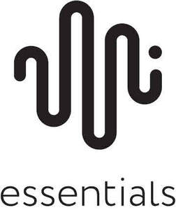

Trade Mark Journal No.2026/005 30 January 2026
UK00004323458 13 January 2026 (3,9)

International priority date claimed: 15 July 2025
(European Union Intellectual Property Office (EUIPO))
(019218231)
- Class 3
- Cleaning fluids.
- Class 9
- Apparatus for recordal, transmission and reproduction of sound or image; audio- and video-receivers; audio- and video-transmitters; loudspeakers; amplifiers; subwoofers; stereos; record players; accessories for record players, including turntable mats specially adapted for record players, cleaning apparatus incorporating brushes for phonograph records and pickups of record players, record decks, record clamps, record weights (hi-fi equipment), tone arms for record players, needles for record players; radios; headphones; loudspeaker stands; tv stands, stands for hi-fi equipment; brackets for setting up flat screens, including TV sets; speaker mounting brackets and bracket for other hi-fi equipment; apparatus and instruments for distribution, switching, transformation, accumulation, regulation or control of electricity; apparatus, instruments and cables for electricity; electric cables, including signal cables, loudspeaker cables, jack cables, power cables, connection cables and audio cables; Electrical connectors; Electronic connectors; Cable connectors; antenna plug; electric adapters; electric converters; electric plugs; banana plugs; jack plugs; spikes (feeds) for record players, loudspeakers and other hi-fi equipment; speaker backbox; cabinets for loudspeakers; remote controls; parts and accessories for the above-mentioned goods, including stands and mounting brackets adapted to place under loudspeakers and stereos.
Nordic Hi-Fi A/S
Representative: Keltie LLP